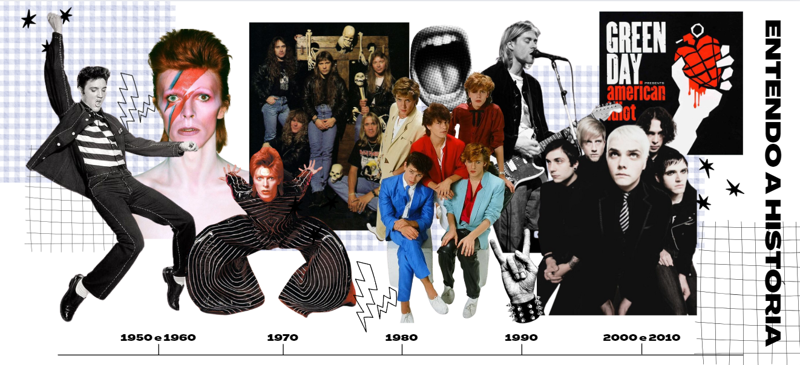

Historia do Rock and Rolll
Introdução
O rock é mais do que um gênero musical; é um movimento cultural que moldou gerações e desafiou convenções. Surgido nos anos 1950 nos Estados Unidos, como uma fusão de blues, country e R&B, o rock rapidamente conquistou o mundo com sua energia, atitude e autenticidade. Ícones como Elvis Presley, Chuck Berry e Little Richard deram os primeiros passos, enquanto movimentos como o rock psicodélico dos anos 1960, o punk dos anos 1970 e o grunge dos anos 1990 ampliaram suas fronteiras. Este site é dedicado a explorar as raízes, os marcos e as transformações que fizeram do rock um símbolo de liberdade e expressão ao longo das décadas.
Bem-vindo a essa viagem pela história do rock!